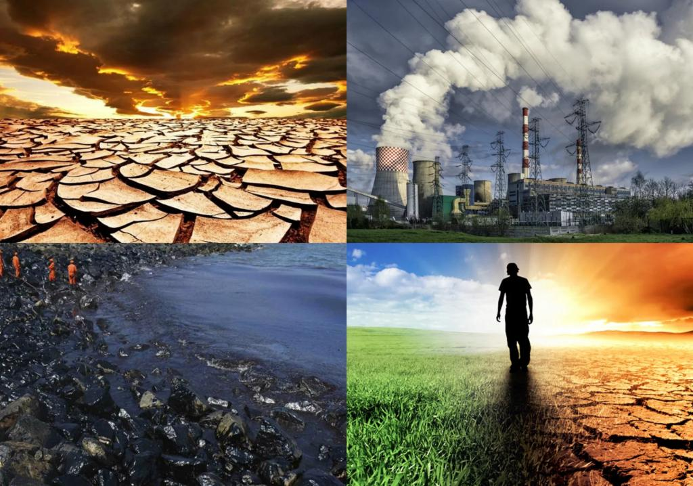
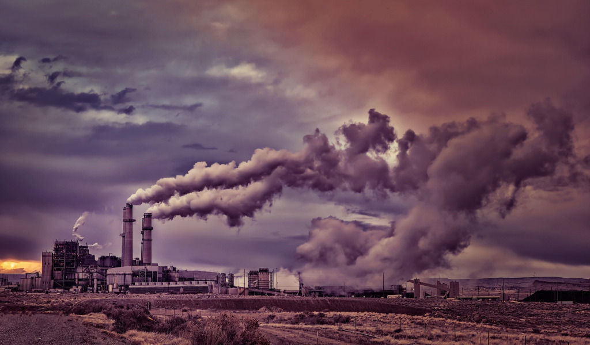
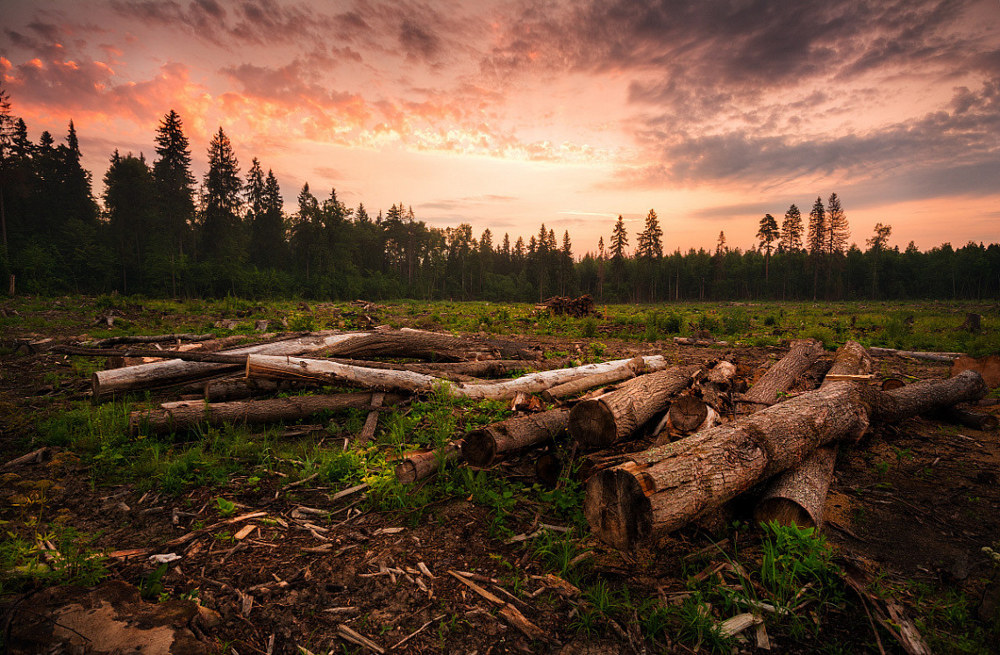
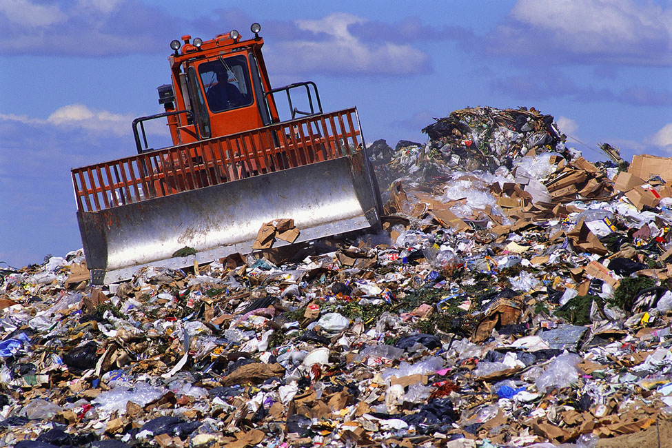
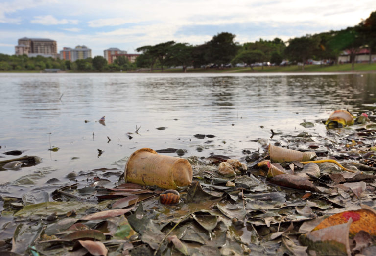

Основные проблемы экологии
На сегодняшний день в мире существует много экологических проблем, начиная от исчезновения некоторых видов растений и животных, заканчивая угрозой вырождения человеческой расы.
Планета земля как целое, включая воду, воздух, землю, недра, а также биологические объекты, не исключая и человека, является целостной системой. Экологические проблемы есть результат взаимодействия нашей цивилизации и окружающей среды в эпоху промышленного развития. Началом этой эпохи принято считать 1860 год, примерно в это время в результате бурного развития евроамериканского капитализма произошёл выход тогдашней промышленности на новый уровень.

Загрязнение атмосферы
Под загрязнением окружающей среды следует понимать изменение свойств среды (химических, физических, биологических), происходящие в результате естественных или искусственных процессов и приводящие к ухудшению функций среды по отношению к любому биологическому или технологическому объекту. Используя различные элементы окружающей среды в своей деятельности, человек изменяет её качество. Часто эти изменения выражаются в неблагоприятной форме загрязнения. По масштабам антропогенные изменения становятся сопоставимыми с природными, а в ряде случаев даже превышают их. Вещества, загрязняющие атмосферу, причиняли значительный вред окружающей среде в течение многих десятилетий. По-видимому, с их вредным воздействием придётся считаться и в будущем. Дальнейший рост населения и промышленного производства неизбежно приводит к увеличению опасности загрязнения.

Истощение озонного слоя
Вблизи поверхности Земли озон является всего лишь вредным компонентом городского смога. Но на высоте 24 км тонкий слой этого бесцветного, не обладающего запахом газа обеспечивает существенную защиту земной поверхности от губительных ультрафиолетовых лучей солнца.
Истощение озонного слоя создаёт более непосредственную угрозу здоровью человека, чем потепление климата. Солнечные ультрафиолетовые лучи вызывают рак кожи, вредят зрению и ослабляют способность организма защищаться от болезней. Кроме того, ультрафиолетовые лучи могут уничтожить планктон, крошечные одноклеточные организмы, составляющие основу цепи питания в океане. Они опасны также для растительного мира на суше, в том числе для сельскохозяйственных культур. Истощение озонного слоя представляет собой более непосредственную опасность для здоровья человека, чем потепление климата, но бороться с ним намного легче. Нужно прекратить производство ХФУ и галлонов. К сожалению, учёные обнаружили, что озон в стратосфере разрушается в два-три раза быстрее, чем считалось ранее. Поэтому для того, чтобы остановить накопление ХФУ в стратосфере, их производство должно быть сокращено на 85%.
Массовое сведение лесов
Массовое сведение лесов - одна из наиболее важных экологических проблем современности. Лесные сообщества играют важнейшую роль в нормальном функционировании природных экосистем. Они поглощают атмосферные загрязнения антропогенного происхождения, защищают почву от эрозии, регулируют нормальный сток поверхностных вод, препятствуют снижению уровня грунтовых вод и заиливанию рек, каналов и водохранилищ. Уменьшение площади лесов нарушает процесс круговорота кислорода и углерода в биосфере. Несмотря на то, что катастрофические последствия сведения лесов уже широко известны, уничтожение их продолжается. Особенно интенсивно уничтожаются влажные тропические леса в Азии, Африке, Америке и некоторых других регионах мира. В результате вырубки лесов реки в этой стране стали чаще выходить из берегов. Сведение лесов влечёт за собой гибель их богатейших флоры и фауны. Под угрозой исчезновения находится некоторые виды птиц, растений, млекопитающих и земноводных. Очень велики отходы при заготовке и использовании леса. Значительный ущерб лесам наносят пожары. Идёт процесс истощения лесов от загрязнения атмосферы вредными выбросами. Заметную роль в снижении устойчивости лесных насаждений оказывают вредители и болезни леса. Человек обедняет облик своей планеты.

Мусор и отходы
Мусор считается экологической проблемой номер один. Мировой климат может становиться более тёплым, а солнце более опасным, но это не так заметно, как мусор, который мозолит глаза уже сегодня. Население и промышленность в Америке выбрасывают больше мусора, чем в любой другой стране мира. Очевидное решение этой проблемы - выбрасывать меньше мусора, особенно занимающих большой объём пластиковых материалов, упаковок и т.д. Избавиться от твёрдого мусора можно тремя способами: закапывать, сжигать или утилизировать. В основном используются первые два способа. Однако мусорные свалки занимают много места и быстро заполняются, а сжигание загрязняет воздух. Ежегодно приходится вывозить много тонн мусора, и в некоторых местах уже нет для этого места. Новые свалки создавать трудно из-за недостатка земли. А если удаётся найти место, то возникают трудности, потому что никто не хочет иметь свалку по соседству. Существующие свалки заполняются, и власти начинают тянуть законодательную волынку. С другой стороны, качество мусоросжигателей улучшается. Прежние слишком загрязняли воздух продуктами сгорания, новые работают гораздо чище.

Загрязнение природных вод
Одним из основных загрязнителей воды является нефть и нефтепродукты. Нефть может попадать в воду в результате естественных её выходов в районах залегания. Но основные источники загрязнения связаны с человеческой деятельностью: нефтедобычей, транспортировкой, переработкой и использованием нефти в качестве топлива и промышленного сырья. Среди продуктов промышленного производства особое место по своему отрицательному воздействию на водную среду и живые организмы занимают токсичные синтетические вещества. Они находят всё более широкое применение в промышленности, на транспорте, в коммунально-бытовом хозяйстве. Эти вещества могут образовывать в водоёмах слой пены, особенно хорошо заметный на порогах, перекатах, шлюзах. Из других загрязнителей надо назвать металлы (например, ртуть, свинец, цинк, медь, олово, марганец), радиоактивные элементы, ядохимикаты, поступающие с сельскохозяйственных ферм, и стоки животноводческих ферм. Большинство из них попадает в воду в результате человеческой деятельности. Тяжёлые металлы поглощаются фитопланктоном, а затем передаются по пищевой цепи более высокоорганизованным организмам.
